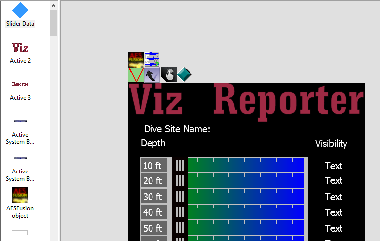

Exporters
Exporters Extensions
Extensions Interface
Interface Chowdren
Chowdren ClickStore
ClickStore Bug Tracker
Bug Tracker| |
This is an archive. |
| See the new ClickWiki at https://clickwiki.github.io. This version is just an archive for the purposes of migrating content to the new structure. |
Frame Editor
Contents
Overview
It allows you to place all the objects of a frame of your application nicely, and create your display visually.
The Frame editor consists of 2 panes.

The left pane
This is the Object List window. It lists all the objects used in the frame.
The right pane
Allows you to edit, the content of your frame. Your frame is displayed in the middle of the edit area, and is surrounded by a gray area. The gray area is off screen, you can use it to hide objects. You can change the size of the off screen area in the preferences of the Frame Editor (Horizontal and Vertical Margins).
If the size of the frame is greater than the size of the window of your application, the size of the window is represented by a hatched rectangle in the top-left corner of the frame.
Usually the size of the frame including the gray, invisible area, is greater than the size of the editor's window. To access the hidden areas, just use the scrollbars, or press the SPACE key while moving the frame with the left mouse button.
How to insert new objects
To insert a new object, either choose the menu option "Insert / New Object" in the menu bar, or right click in the editor and choose the option "Insert object" from the popup menu. You will be presented with the object selector box, pick one object and then click into the frame at the position you want to put it.
Drag & Drop
You can drag & drop objects from:
- the Object List window
- the Workspace window
- the Library window
- another Frame editor
- Drag graphics from any folder on your computer
When you drag an object from the Object List window, a new occurrence of the object is created in the frame. All the occurrences of the same object share the same properties. You can also create new occurrences with the Duplicate command in the frame editor's context menu.
When you drag an object from the Workspace window or from the Library window, a new occurrence of the object is created in the frame. If the original object is from a different frame and has no occurrence in the destination frame, then a new object is created and appears in the Object List window.
When you drag an object from/to the same Frame editor, the object is moved. If you press CTRL while releasing the mouse button, the object is duplicated, i.e. a new occurrence of the same object is created. Note: when you drag an object, the mouse cursor contains a '+' when the object is going to be duplicated, otherwise it's going to be moved.
When you drag an object between 2 different frames, by default the object is duplicated in the destination frame. If you press SHIFT while releasing the mouse button, then the object is moved, i.e. it is deleted from the source frame.
If you use the right mouse button to drag & drop an object, when you release the mouse button you are presented with a popup menu, in which you can choose: - Copy here, to duplicate the object. - Move here, to move the object. - Cancel, to cancel the drag & drop operation.
Selection
To select an object, simply click on it. The number displayed in the top-left corner of the selection box is the number of its layer, followed by the number of the object in the list of objects of this layer.
To select several objects, either draw a selection box around the objects to select or press SHIFT while clicking objects to add or remove them from the selection.
When several objects are selected, you will notice that one of them has a dark blue selection frame, while the others have a hatched blue selection frame. The object with the dark blue selection frame is the master object. The master object is used in some commands like the Align Objects or Make Same Size commands. For example with a Make Same Width command, all the selected (resizable) objects will be resized to the width of the master object. With an Align Objects / Left command, all the objects will be moved so that their left border is aligned with the left border of the master object. You can change the master object in the current selection by pressing CTRL while clicking on the new master object.
Move objects
To move objects, just select them and drag them. You can also manually change their position in the Size & Position tab in the Properties, and/or use the various alignment commands in the menu.
Resize & Rotate objects
Some objects can be resized or rotated. To resize an object, select it and then click on it once again: resize handles appears around the selection box. Click and drag the handles to resize the object. To rotate an object, select it and then click twice to make the rotation handles appear. Click and drag the handles to rotate the object. You can also manually change the size and angle in the Size & Position tab in the Property window.
Properties
When you select an object in the Frame editor, its properties are automatically displayed in the Property window; If the Property window is hidden, right-click the object and select Properties in the context menu. When several objects are selected, only the shared properties are displayed in the Property window.